Bài 5: kiến thức cơ bản về ô
Bài học 5: Khái niệm cơ bản về ô
/en/excel/save-and-sharing-workbooks/content/
Giới thiệu
Bất cứ khi nào bạn làm việc với Excel, bạn sẽ nhập thông tin—hoặcnội dung—vàoô. Các ô là các khối xây dựng cơ bản của một bảng tính. Bạn sẽ cần tìm hiểu kiến thức cơ bản vềôvànội dung ôđể tính toán, phân tích và sắp xếp dữ liệu trong Excel.
Xem video bên dưới để tìm hiểu thêm về những điều cơ bản khi làm việc với ô.
Hiểu ô
Mỗi trang tính được tạo thành từ hàng nghìn hình chữ nhật, được gọi làô. Ô làgiao điểmcủahàngvàcột. Nói cách khác, đó là nơi hàng và cột gặp nhau.
Các cột được xác định bằngchữ cái(A, B, C), trong khi các hàng được xác định bằngsố (1, 2, 3). Mỗi ô cótên—hoặcđịa chỉ ô—dựa trên cột và hàng riêng. Trong ví dụ bên dưới, ô được chọn giao nhau vớicột Cvàhàng 5nên địa chỉ ô làC5.
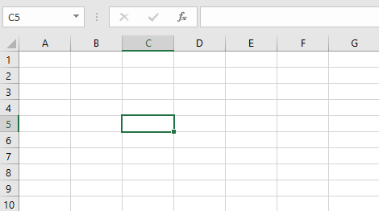
Lưu ý rằng địa chỉ ô cũng xuất hiện tronghộp Tênở góc trên cùng bên trái vàcộtvàtiêu đề hàngcủa ô đượcđánh dấukhi ô được chọn.
Bạn cũng có thể chọnnhiều ôcùng một lúc. Một nhóm ô được gọi làphạm vi ô. Thay vì chỉ một địa chỉ ô, bạn sẽ tham chiếu đến một phạm vi ô bằng cách sử dụng địa chỉ ô của các ôđầu tiênvàcuốitrong phạm vi ô, được phân tách bằngdấu hai chấm. Ví dụ: một phạm vi ô bao gồm các ô A1, A2, A3, A4 và A5 sẽ được viết làA1:A5. Hãy xem các phạm vi ô khác nhau dưới đây:
- Phạm vi ô**A1:A8
 * Phạm vi ôA1:F1
* Phạm vi ôA1:F1
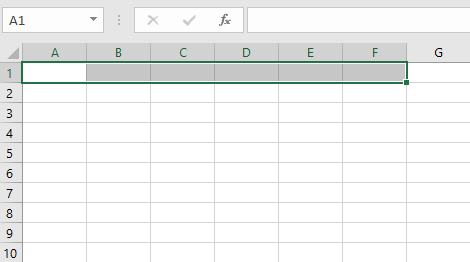
* Phạm vi ôA1:F8 **
**
Nếu các cột trong bảng tính của bạn được gắn nhãn bằng số thay vì chữ cái, bạn sẽ cần thay đổikiểu tham chiếumặc định cho Excel. Xem lại phần bổ sung của chúng tôi về Phong cách tham chiếu là gì? để tìm hiểu cách thực hiện.
Để chọn một ô:
Để nhập hoặc chỉnh sửa nội dung ô, trước tiên bạn cầnchọnô.
- Nhấp vàoôđể chọn ô đó. Trong ví dụ của chúng tôi, chúng tôi sẽ chọn ôD9.
- đường viềnsẽ xuất hiện xung quanh ô đã chọn vàtiêu đề cộtvàtiêu đề hàngsẽ được đánh dấu. Ô sẽ vẫn được chọn cho đến khi bạn bấm vào một ô khác trong bảng tính.
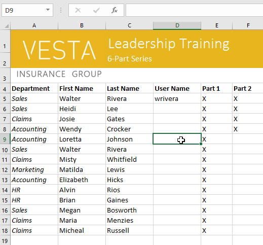
Bạn cũng có thể chọn các ô bằngphím mũi têntrên bàn phím.
Để chọn một phạm vi ô:
Đôi khi bạn có thể muốn chọn một nhóm ô lớn hơn hoặc mộtphạm vi ô.
- Nhấp và kéo chuột cho đến khi tất cảliền kềôbạn muốn chọn đượcđánh dấu. Trong ví dụ của chúng tôi, chúng tôi sẽ chọn phạm vi ôB5:C18.
- Nhả chuột đểchọnphạm vi ô mong muốn. Các ô sẽ vẫn được chọn cho đến khi bạn bấm vào một ô khác trong bảng tính.
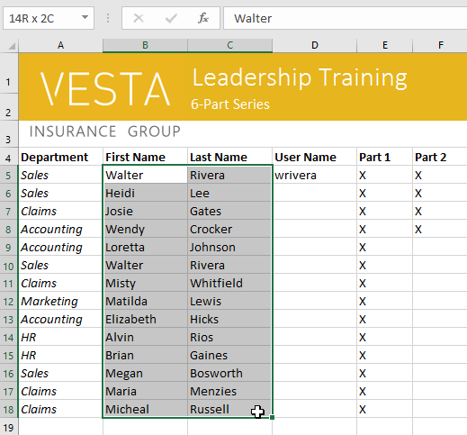
Nội dung ô
Mọi thông tin bạn nhập vào bảng tính sẽ được lưu trữ trong một ô. Mỗi ô có thể chứa các loạinội dungkhác nhau, bao gồmvăn bản,định dạng,công thứcvàhàm.
- Văn bản:Các ô có thể chứavăn bản, chẳng hạn như chữ cái, số và ngày tháng.
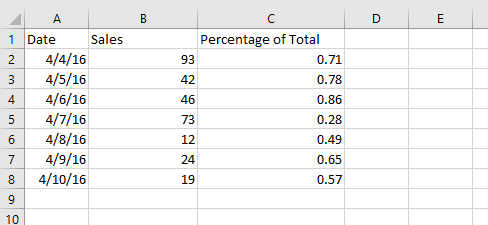
* Thuộc tính định dạng:Các ô có thể chứathuộc tính định dạngthay đổi cách hiển thị chữ cái, số và ngày. Ví dụ: tỷ lệ phần trăm có thể xuất hiện dưới dạng 0,15 hoặc 15%. Bạn thậm chí có thể thay đổivăn bảnhoặcmàu nềncủa ô.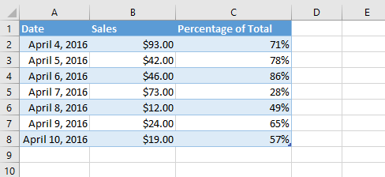
* Công thức và hàm: Ô có thể chứacông thứcvàhàmtính toán giá trị ô. Trong ví dụ của chúng tôi,SUM(B2:B8)thêm giá trị của từng ô trong phạm vi ô B2:B8 và hiển thị tổng số trong ô B9.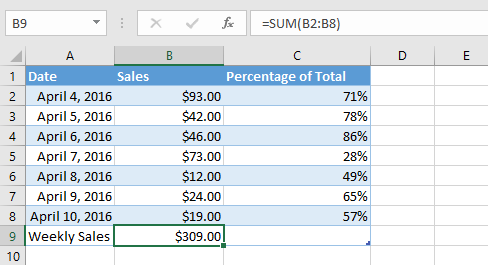
Để chèn nội dung:
- Nhấp vàoôđể chọn ô đó. Trong ví dụ của chúng tôi, chúng tôi sẽ chọn ôF9.
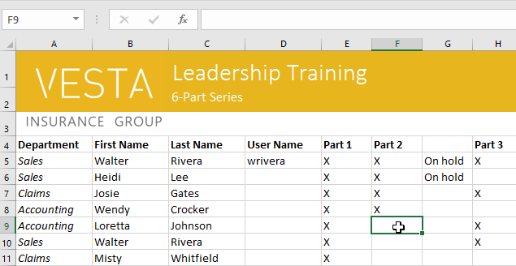
2. Nhập nội dung nào đó vào ô đã chọn, sau đó nhấnEntertrên bàn phím của bạn. Nội dung sẽ xuất hiện trongôvàcông thứcthanh. Bạn cũng có thể nhập và chỉnh sửa nội dung ô trong thanh công thức.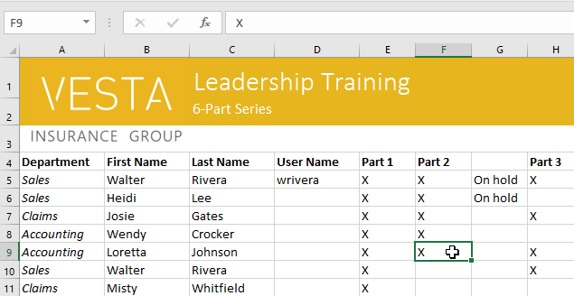
Để xóa (hoặc xóa) nội dung ô:
- Chọnôcó nội dung bạn muốn xóa. Trong ví dụ của chúng tôi, chúng tôi sẽ chọn phạm vi ôA10:H10.
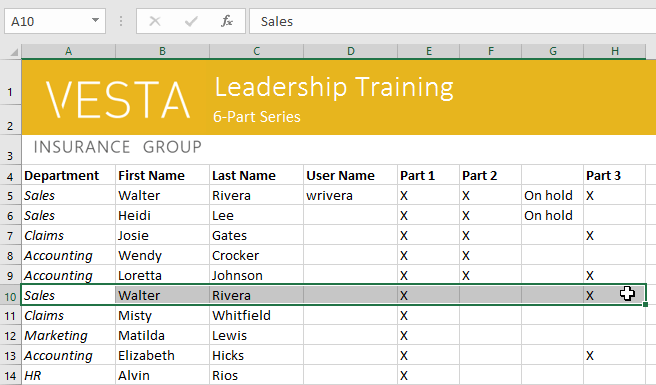
2. Chọn lệnhXóatrên tabTrang chủ, sau đó nhấp vàoXóa nội dung.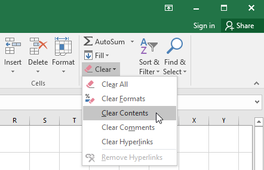
3. Nội dung ô sẽ bị xóa.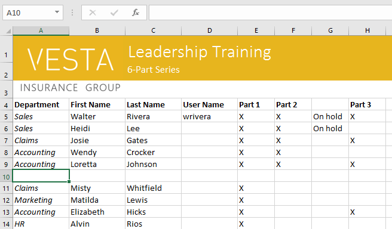
Bạn cũng có thể sử dụng phímXóatrên bàn phím để xóa nội dung khỏinhiều ôcùng một lúc. PhímBackspacesẽ chỉ xóa nội dung khỏi một ô mỗi lần.
Để xóa ô:
Có một sự khác biệt quan trọng giữa việc xóa nội dung của một ô vàxóa chính ô đó. Nếu bạn xóa toàn bộ ô, các ô bên dưới nó sẽdịch chuyểnđể điền vào chỗ trốngvàthay thếcác ô đã xóa.
- Chọn(các) ôbạn muốn xóa. Trong ví dụ của chúng tôi, chúng tôi sẽ chọnA10:H10.
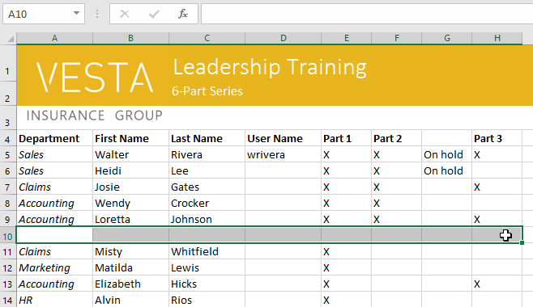
2. Chọn lệnhXóatừ tabTrang chủtrênRibbon.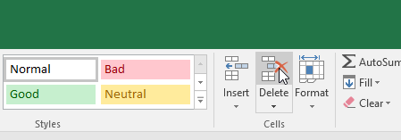
3. Các ô bên dưới sẽdịch chuyểnlênvàđiền vào chỗ trống.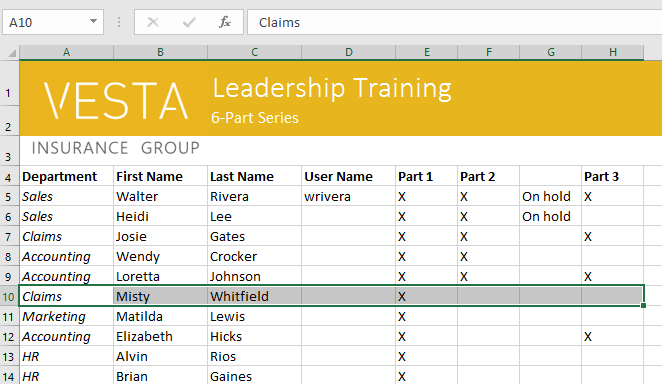
Để sao chép và dán nội dung ô:
Excel cho phép bạnsao chépnội dung đã được nhập vào bảng tính của bạn vàdánnội dung này vào các ô khác, điều này có thể giúp bạn tiết kiệm thời gian và công sức.
- Chọn(các) ôbạn muốnsao chép. Trong ví dụ của chúng tôi, chúng tôi sẽ chọnF9.
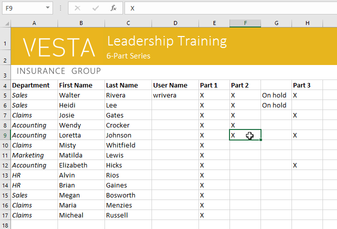
2. Nhấp vào lệnhSao chéptrên tabTrang chủhoặc nhấnCtrl+Ctrên bàn phím của bạn.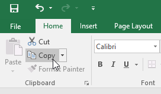
3. Chọn(các) ônơi bạn muốndánnội dung. Trong ví dụ của chúng tôi, chúng tôi sẽ chọnF12:F17. (Các) ô được sao chép sẽ cóhộp nét đứtxung quanh chúng.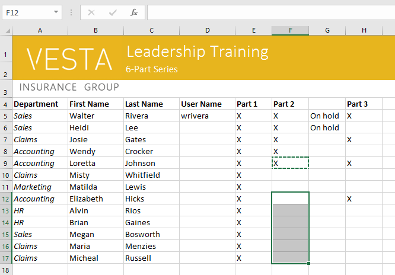
4. Nhấp vào lệnhDántrên tabTrang chủhoặc nhấnCtrl+Vtrên bàn phím của bạn.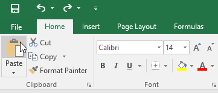
5. Nội dung sẽ đượcdánvào các ô đã chọn.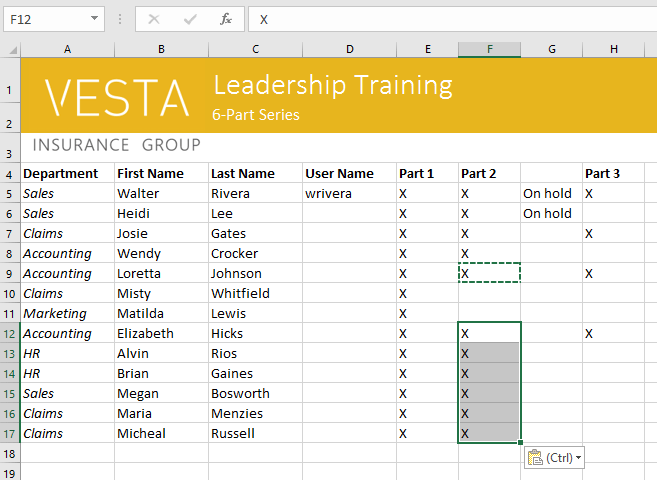
Để truy cập các tùy chọn dán bổ sung:
Bạn cũng có thể truy cậptùy chọn dán bổ sung, đặc biệt thuận tiện khi làm việc với các ô chứacông thứchoặcđịnh dạng. Chỉ cần nhấp vàomũi tên thả xuốngtrên lệnhDánđể xem các tùy chọn này.
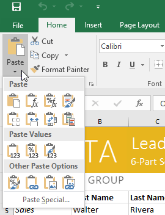
Thay vì chọn lệnh từ Ribbon, bạn có thể truy cập lệnh nhanh chóng bằng cáchnhấp chuột phải. Chỉ cần chọnôbạn muốnđịnh dạng, sau đó nhấp chuột phải.menu thả xuốngsẽ xuất hiện, tại đó bạn sẽ tìm thấy một sốlệnhcũng nằm trên Ribbon.
Để cắt và dán nội dung ô:
Không giống như sao chép và dán,sao chépnội dung ô,cắtcho phép bạndi chuyểnnội dung giữa các ô.
- Chọn(các) ôbạn muốncắt. Trong ví dụ của chúng tôi, chúng tôi sẽ chọnG5:G6.
- Nhấp chuột phải và chọn lệnhCut. Bạn cũng có thể sử dụng lệnh trên tabTrang chủhoặc nhấnCtrl+Xtrên bàn phím.
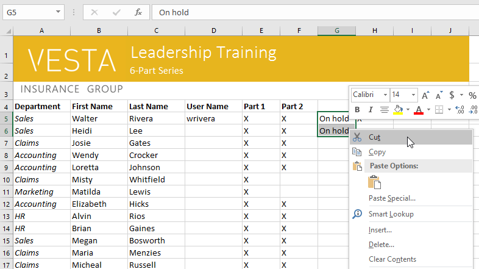
3. Chọn các ô mà bạn muốndánnội dung. Trong ví dụ của chúng tôi, chúng tôi sẽ chọnF10:F11. Bây giờ, các ô đã cắt sẽ cóhộp nét đứtxung quanh chúng. 4. Nhấp chuột phải và chọn lệnhDán. Bạn cũng có thể sử dụng lệnh trên tabTrang chủhoặc nhấnCtrl+Vtrên bàn phím.5. Nội dung cắt sẽ đượcxóakhỏi các ô ban đầu vàdánvào các ô đã chọn.
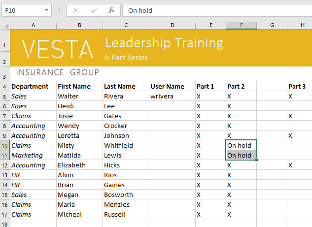
Để kéo và thả ô:
Thay vì cắt, sao chép và dán, bạn có thểkéo và thảô để di chuyển nội dung của chúng.
- Chọn(các) ôbạn muốndi chuyển. Trong ví dụ của chúng tôi, chúng tôi sẽ chọnH4:H12.
- Di chuột quađường viềncủa (các) ô đã chọn cho đến khi chuột chuyển thànhcon trỏ có bốn mũi tên.
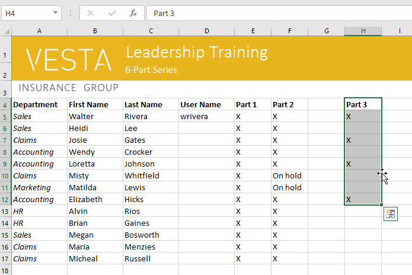
3. Nhấp và kéo các ô đếnmong muốnvị trí. Trong ví dụ của chúng tôi, chúng tôi sẽ chuyển chúng sangG4:G12.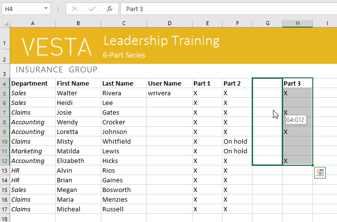
4. Thả chuột. Các ô sẽ đượcthảở vị trí đã chọn.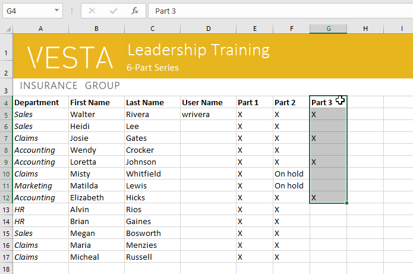
Để sử dụng núm điều khiển điền:
Nếu bạn đang sao chép nội dung ô sang các ô liền kề trong cùng một hàng hoặc cột,điền vàolà một lựa chọn thay thế phù hợp cho lệnh sao chép và dán.
- Chọnô (các)chứa nội dung bạn muốn sử dụng, sau đó di chuột qua góc dưới bên phải của ô đểbộ điều khiển điềnxuất hiện.
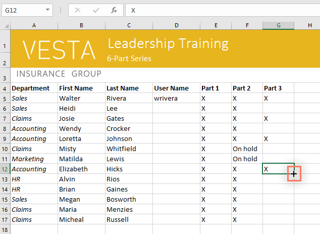
2. Nhấp và kéobộ điều khiển điềncho đến khi tất cả các ô bạn muốn điền đều được chọn. Trong ví dụ của chúng tôi, chúng tôi sẽ chọnG13:G17.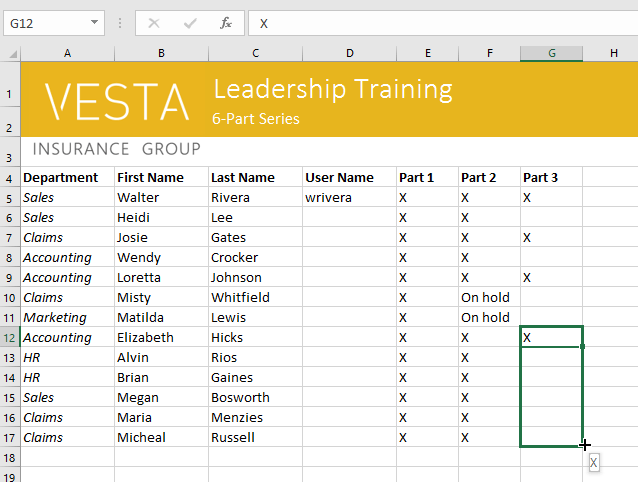
3. Nhả chuột đểđiềncác ô đã chọn.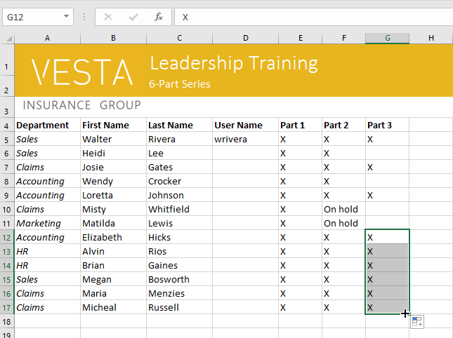
Để tiếp tục một loạt bài có núm điều khiển điền:
Tay cầm điền cũng có thể được sử dụng đểtiếp tụcmột chuỗi. Bất cứ khi nào nội dung của một hàng hoặc cột tuân theo một thứ tự tuần tự, nhưsố(1, 2, 3)hoặcngày(Thứ Hai, Thứ Ba, Thứ Tư), bộ điều khiển điền có thể đoán điều gì sẽ xảy ra tiếp theo trong chuỗi. Trong hầu hết các trường hợp, bạn sẽ cần chọnnhiều ôtrước khi sử dụng núm điều khiển điền để giúp Excel xác định thứ tự chuỗi. Chúng ta hãy xem một ví dụ:
- Chọn phạm vi ô chứa chuỗi bạn muốn tiếp tục. Trong ví dụ của chúng tôi, chúng tôi sẽ chọnE4:G4.
- Nhấp và kéo núm điều khiển điền để tiếp tục chuỗi.
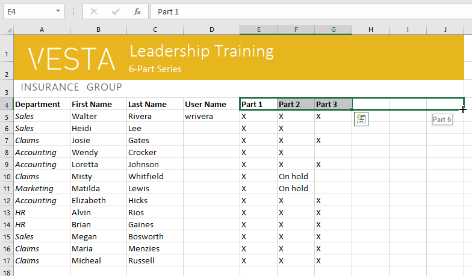
3. Thả chuột. Nếu Excel hiểu chuỗi này thì nó sẽ được tiếp tục trong các ô đã chọn. Trong ví dụ của chúng tôi, Excel đã thêmPhần 4,Phần 5vàPhần 6vàoH4:J4.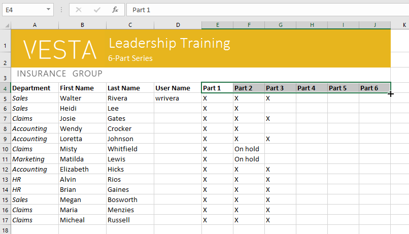
Bạn cũng có thểbấm đúpvào ô điều khiển điền thay vì nhấp và kéo. Điều này có thể hữu ích với các bảng tính lớn hơn, nơi việc nhấp và kéo có thể gặp khó khăn.
Xem video bên dưới để biết ví dụ về cách bấm đúp vào núm điều khiển điền.
Thử thách!
- Mở sổ làm việc thực hành của chúng tôi.
- Chọn ôD6và nhậphlee.
- Xóa nội dungở hàng 14.
- Xóacột G.
- Sử dụngcắt và dánhoặckéo và thả, di chuyển nội dung của hàng 18 sang hàng 14.
- Sử dụngbộ điều khiển điềnđể đặt dấu X vào các ô F9:F17.
- Khi bạn hoàn tất, sổ làm việc của bạn sẽ trông như thế này:

/en/excel/modifying-columns-rows-and-cells/content/